Monorail backgrounds
Our own monorail masters, made locally from scratch with short prompts. Your images were used only as the quality bar, never as a source. Every image here passed a separate strict reviewer that saw only the pictures; its line is under each one. The progress shots are derived from our exterior master. Nothing is in the game. Click an image to enlarge; arrow keys step through, Esc closes.
Exterior master
Made from scratch: your prompt text as written, One Obsession and RDBT, six seeds each, plus six each with a "visible only" rewrite (the destination and "crossing toward" taken out). Only the passes are shown. 5 of 24 passed; the two One Obsession ones are the only ones near your quality bar. RDBT turns open scenery into flat poster art (reviewer look 2/5), so One Obsession is the model for these.
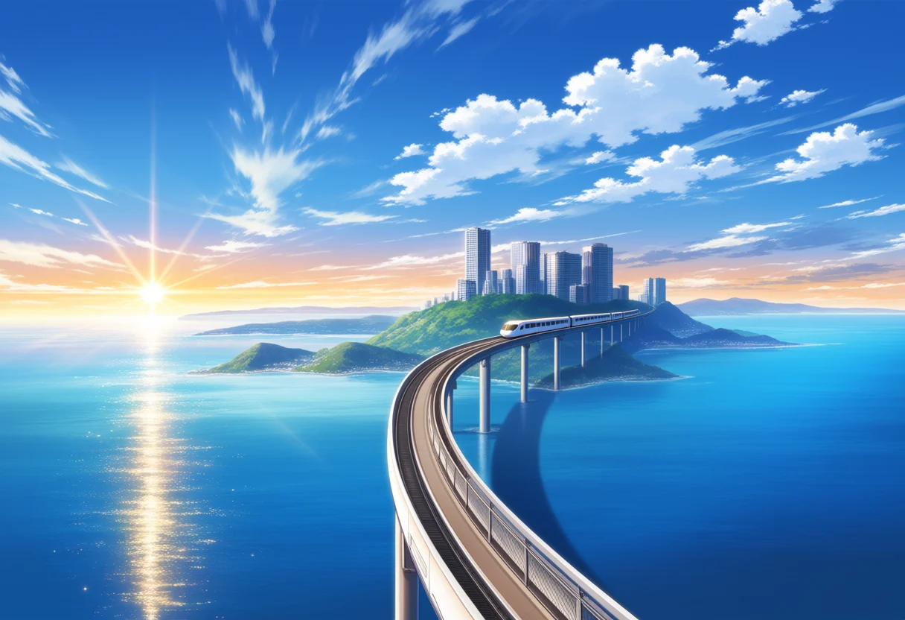
ext-ref-oneobs-906
The master the progress shots below are derived from.
Reviewer: pass. Train sits on a supported curving beam that runs straight to the island city, with the low sun and no other city; the island reads more as a natural hill than a built island.
Prompt
anime screenshot, anime coloring, 2d, cel shading, clean lineart, (detailed anime background art, hand-painted anime background, painted clouds, no humans, scenery, showing a monorail train riding high above a Bay on a curving elevated monorail. The monorail is crossing toward a large man-made island city with office towers and other buildings. the office towers are catching the low morning sun, the calm sea below with sunlight glittering on the water, early morning sun low on the horizon. dominant clear sky blue and sea blue, broad white cloud and glass, sparse warm sunrise orange accents, bright hopeful light. No other city in the background, only island and monorail going towards it.
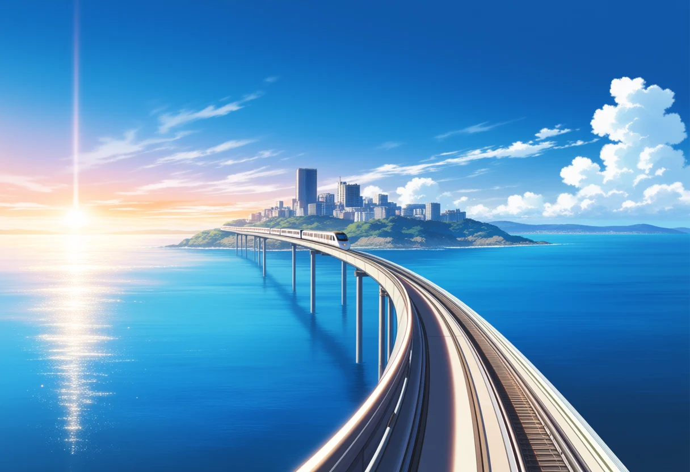
ext-ref-oneobs-903
Reviewer: pass. A clear train on a continuous curving beam with pillars into the water, leading straight to the island city under a low sun.
Prompt
anime screenshot, anime coloring, 2d, cel shading, clean lineart, (detailed anime background art, hand-painted anime background, painted clouds, no humans, scenery, showing a monorail train riding high above a Bay on a curving elevated monorail. The monorail is crossing toward a large man-made island city with office towers and other buildings. the office towers are catching the low morning sun, the calm sea below with sunlight glittering on the water, early morning sun low on the horizon. dominant clear sky blue and sea blue, broad white cloud and glass, sparse warm sunrise orange accents, bright hopeful light. No other city in the background, only island and monorail going towards it.
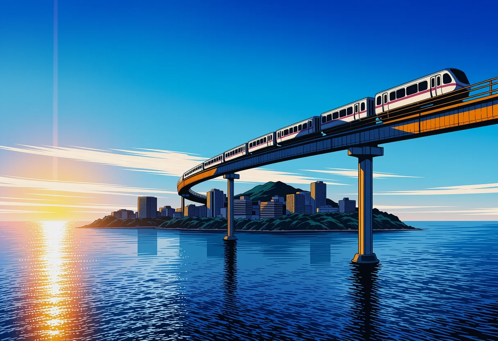
ext-ref-rdbt-903
Passes on logic but flat poster style.
Reviewer: pass. The beam sits on pillars in the water and curves into the island city, and the train has a visible end; the style is flat woodcut poster rather than anime.
Prompt
anime screenshot, anime coloring, 2d, cel shading, clean lineart, (detailed anime background art, hand-painted anime background, painted clouds, no humans, scenery, showing a monorail train riding high above a Bay on a curving elevated monorail. The monorail is crossing toward a large man-made island city with office towers and other buildings. the office towers are catching the low morning sun, the calm sea below with sunlight glittering on the water, early morning sun low on the horizon. dominant clear sky blue and sea blue, broad white cloud and glass, sparse warm sunrise orange accents, bright hopeful light. No other city in the background, only island and monorail going towards it.
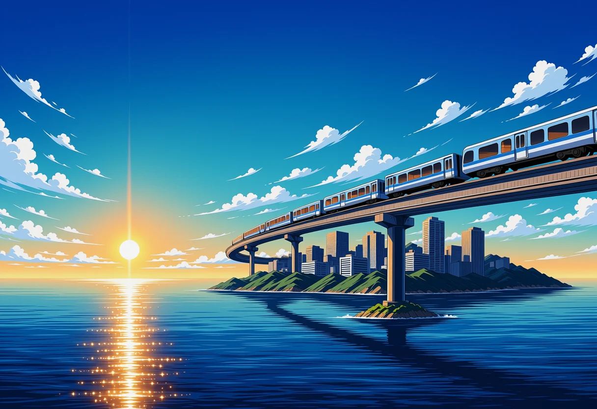
ext-ref-rdbt-904
Passes on logic but flat poster style.
Reviewer: pass. The beam is supported by pillars (one on a rock) and curves onto the island with a clear train; the style is flat pop-art.
Prompt
anime screenshot, anime coloring, 2d, cel shading, clean lineart, (detailed anime background art, hand-painted anime background, painted clouds, no humans, scenery, showing a monorail train riding high above a Bay on a curving elevated monorail. The monorail is crossing toward a large man-made island city with office towers and other buildings. the office towers are catching the low morning sun, the calm sea below with sunlight glittering on the water, early morning sun low on the horizon. dominant clear sky blue and sea blue, broad white cloud and glass, sparse warm sunrise orange accents, bright hopeful light. No other city in the background, only island and monorail going towards it.
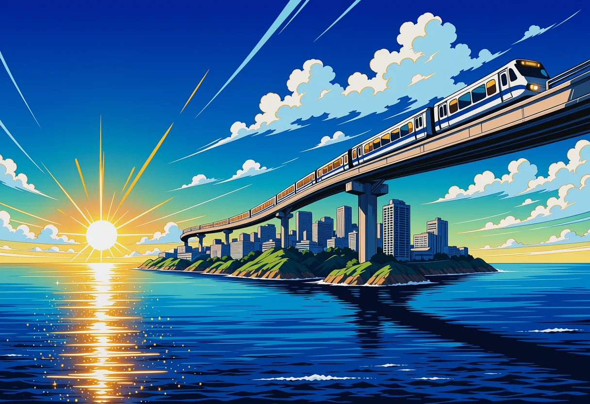
ext-ref-rdbt-906
Passes on logic but flat poster style.
Reviewer: pass. The beam is supported and curves into the island city with the train on top, but the sunburst and colours are garish.
Prompt
anime screenshot, anime coloring, 2d, cel shading, clean lineart, (detailed anime background art, hand-painted anime background, painted clouds, no humans, scenery, showing a monorail train riding high above a Bay on a curving elevated monorail. The monorail is crossing toward a large man-made island city with office towers and other buildings. the office towers are catching the low morning sun, the calm sea below with sunlight glittering on the water, early morning sun low on the horizon. dominant clear sky blue and sea blue, broad white cloud and glass, sparse warm sunrise orange accents, bright hopeful light. No other city in the background, only island and monorail going towards it.
Interior master: straight-on side window
Made from scratch with your interior prompt minus the man, plus "The sea far below is calm and flat, no waves." 9 of 16 passed. One Obsession gives painted windows with calm water seen from above; RDBT gives flat vector art and often striped skies or surf at the sill. None shows the sun disc and none has exactly two seats (benches of three or four).
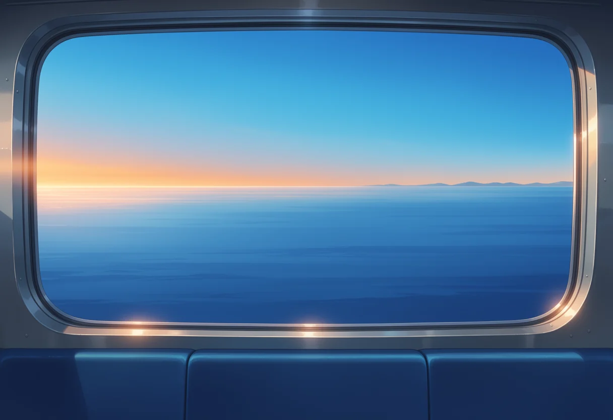
int-oneobs-901
Reviewer: pass. Best logic: one large window, calm bay far below, low far shore on the right, sun glow at left, glints on the frame match the light.
Prompt
anime screenshot, anime coloring, 2d, cel shading, clean lineart, detailed anime background art, hand-painted anime background, no humans, scenery, interior view inside the monorail train, window showing sea and sky. 2 seats visible, window is fully visible, straight on angle. The sea far below is calm and flat, no waves. Early morning sun low over the sea, dominant sky blue and sea blue, sparse warm sunrise orange accents.
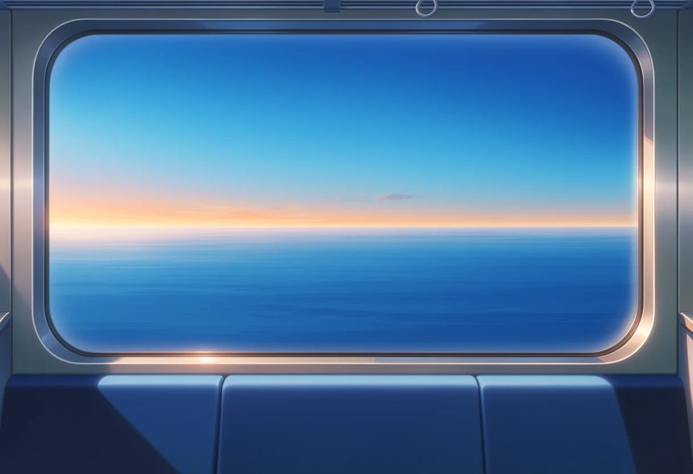
int-oneobs-903
Reviewer: pass. Correct: one large window, calm sea far below, horizon mid-window, soft sunrise glow, clean carriage wall and seats.
Prompt
anime screenshot, anime coloring, 2d, cel shading, clean lineart, detailed anime background art, hand-painted anime background, no humans, scenery, interior view inside the monorail train, window showing sea and sky. 2 seats visible, window is fully visible, straight on angle. The sea far below is calm and flat, no waves. Early morning sun low over the sea, dominant sky blue and sea blue, sparse warm sunrise orange accents.
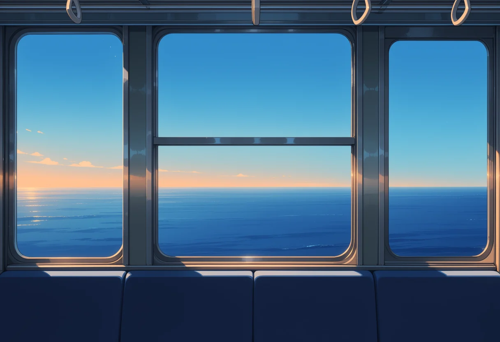
int-oneobs-904
Reviewer: pass. Calm sea seen from height with horizon mid-window and sun glow at far left; clean and consistent, though it shows three windows and a four-cushion bench instead of one big window and two seats.
Prompt
anime screenshot, anime coloring, 2d, cel shading, clean lineart, detailed anime background art, hand-painted anime background, no humans, scenery, interior view inside the monorail train, window showing sea and sky. 2 seats visible, window is fully visible, straight on angle. The sea far below is calm and flat, no waves. Early morning sun low over the sea, dominant sky blue and sea blue, sparse warm sunrise orange accents.
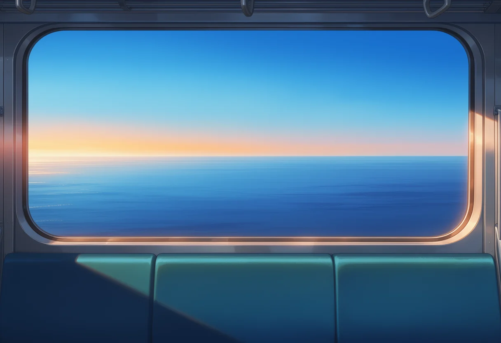
int-oneobs-905
Reviewer: pass. Correct: one large window, still sea far below, horizon mid-window, warm sun glow at left consistent with the diagonal light on the seats.
Prompt
anime screenshot, anime coloring, 2d, cel shading, clean lineart, detailed anime background art, hand-painted anime background, no humans, scenery, interior view inside the monorail train, window showing sea and sky. 2 seats visible, window is fully visible, straight on angle. The sea far below is calm and flat, no waves. Early morning sun low over the sea, dominant sky blue and sea blue, sparse warm sunrise orange accents.
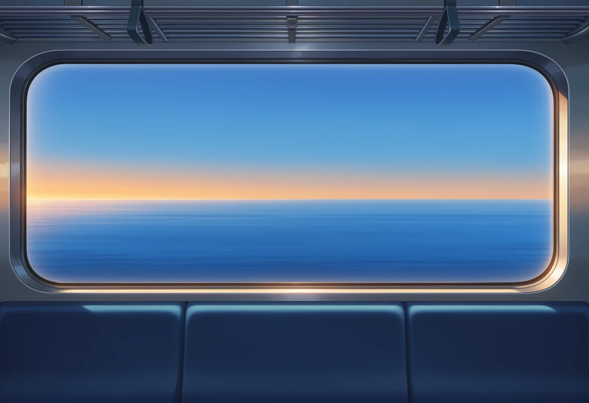
int-oneobs-906
Reviewer: pass. Correct: one large window over calm open sea seen from height, horizon mid-window, soft glow, nothing extra in view.
Prompt
anime screenshot, anime coloring, 2d, cel shading, clean lineart, detailed anime background art, hand-painted anime background, no humans, scenery, interior view inside the monorail train, window showing sea and sky. 2 seats visible, window is fully visible, straight on angle. The sea far below is calm and flat, no waves. Early morning sun low over the sea, dominant sky blue and sea blue, sparse warm sunrise orange accents.
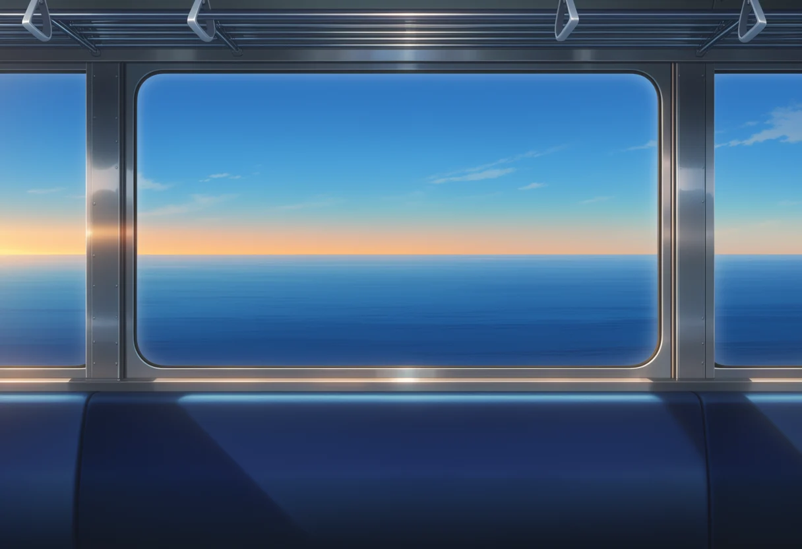
int-oneobs-907
Reviewer: pass. Consistent horizon across all three windows, calm sea from height, sun glow at left; the seat is one continuous bench, not two seats.
Prompt
anime screenshot, anime coloring, 2d, cel shading, clean lineart, detailed anime background art, hand-painted anime background, no humans, scenery, interior view inside the monorail train, window showing sea and sky. 2 seats visible, window is fully visible, straight on angle. The sea far below is calm and flat, no waves. Early morning sun low over the sea, dominant sky blue and sea blue, sparse warm sunrise orange accents.
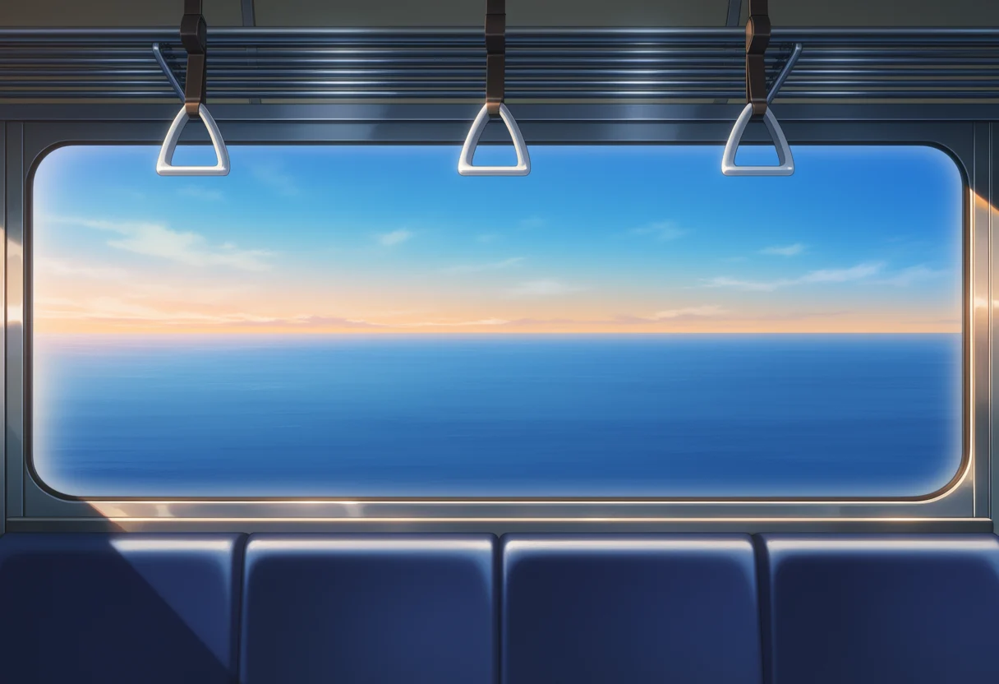
int-oneobs-908
Reviewer: pass. One large window, calm sea far below, horizon mid-window, no sun disc (only glow), nothing wrong in the carriage; the straps hang slightly awkwardly across the glass.
Prompt
anime screenshot, anime coloring, 2d, cel shading, clean lineart, detailed anime background art, hand-painted anime background, no humans, scenery, interior view inside the monorail train, window showing sea and sky. 2 seats visible, window is fully visible, straight on angle. The sea far below is calm and flat, no waves. Early morning sun low over the sea, dominant sky blue and sea blue, sparse warm sunrise orange accents.
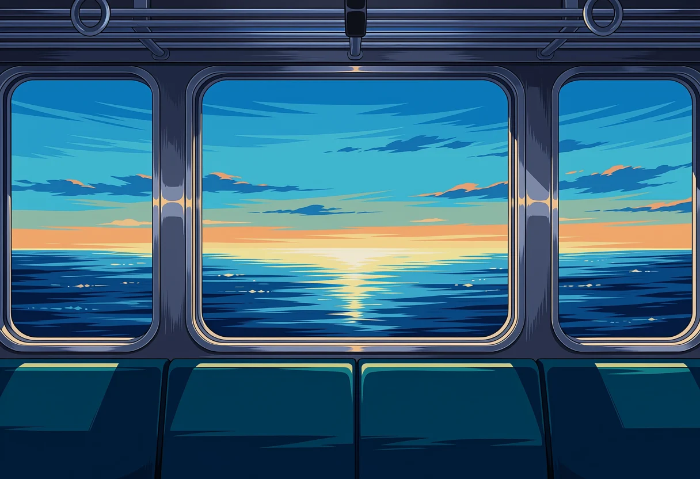
int-rdbt-905
Passes on logic, but flat vector style.
Reviewer: pass. Logic holds across the three windows (continuous horizon and clouds, sun glow in the centre), but the style is flat poster clip-art.
Prompt
anime screenshot, anime coloring, 2d, cel shading, clean lineart, detailed anime background art, hand-painted anime background, no humans, scenery, interior view inside the monorail train, window showing sea and sky. 2 seats visible, window is fully visible, straight on angle. The sea far below is calm and flat, no waves. Early morning sun low over the sea, dominant sky blue and sea blue, sparse warm sunrise orange accents.
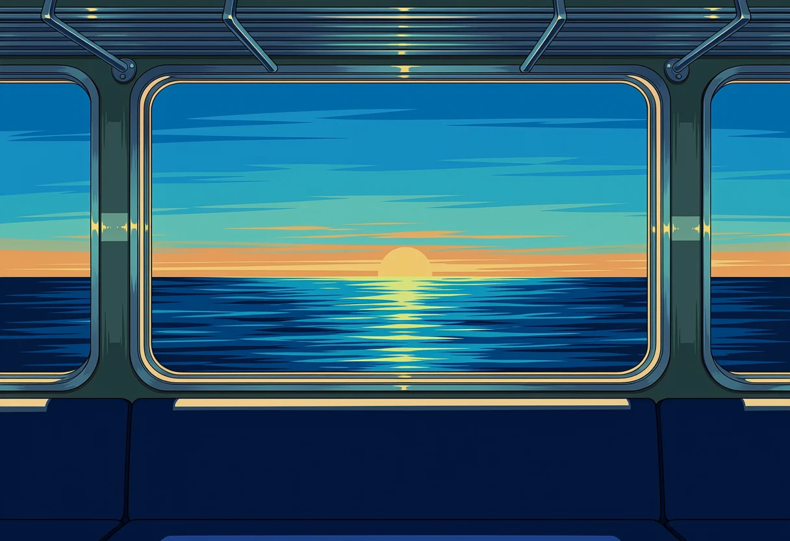
int-rdbt-907
Passes on logic, but flat vector style.
Reviewer: pass. Logic holds (horizon mid-window, one sun with a matching glitter path, no track), but it is flat vector clip-art, not anime background painting.
Prompt
anime screenshot, anime coloring, 2d, cel shading, clean lineart, detailed anime background art, hand-painted anime background, no humans, scenery, interior view inside the monorail train, window showing sea and sky. 2 seats visible, window is fully visible, straight on angle. The sea far below is calm and flat, no waves. Early morning sun low over the sea, dominant sky blue and sea blue, sparse warm sunrise orange accents.
Progress toward the island
Derived only from our master ext-ref-oneobs-906: cropped toward the island and repainted with One Obsession at low strength, so the train, beam and island keep their shape. 4 of 12 passed; the best mid and near are shown. The rest mostly had the beam stop right behind the train, or no visible last car. At these low strengths the view gets only a little closer; a bigger step would need a new master.
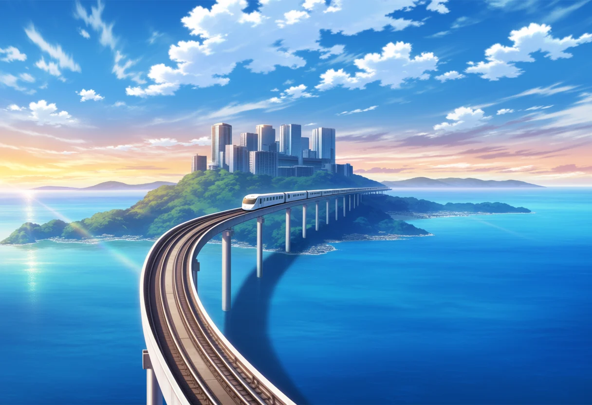
progress-mid-oneobs-0.5-933
Mid: the beam continues past the train and the last car is clear.
Reviewer: pass. Last car is clear, beam continues on along the island, and the sun, reflection and flare are consistent; the closest match to the master.
Prompt
anime screenshot, anime coloring, 2d, cel shading, clean lineart, detailed anime background art, no humans, scenery, a white monorail train on a curving elevated monorail beam on pillars high above a calm bay, heading to an island city of office towers, low morning sun glittering on the sea, blue sky with white clouds.
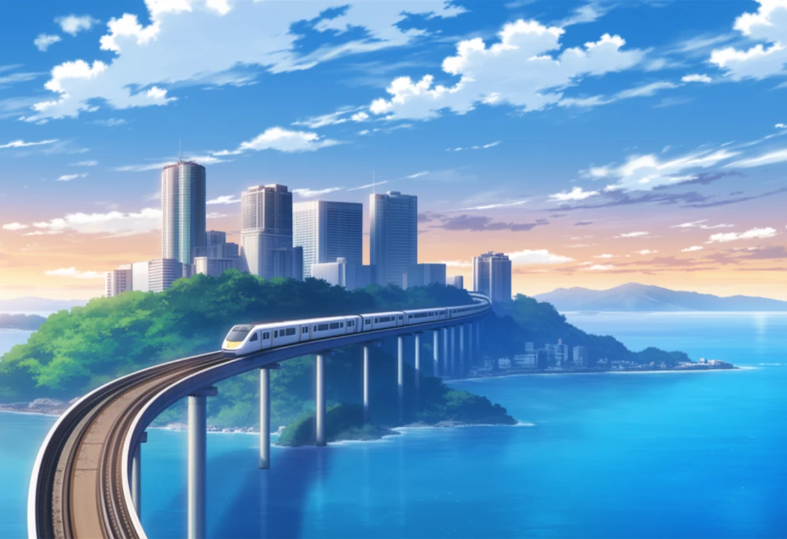
progress-near-oneobs-0.35-933
Near: tighter on the island; the beam visibly curves on behind it.
Reviewer: pass. Last car is clear, beam visibly curves on behind the island, supports reach the water, and scale is believable.
Prompt
anime screenshot, anime coloring, 2d, cel shading, clean lineart, detailed anime background art, no humans, scenery, a white monorail train on an elevated monorail beam on pillars, close to an island city of office towers, calm sea, low morning sun, blue sky with white clouds.